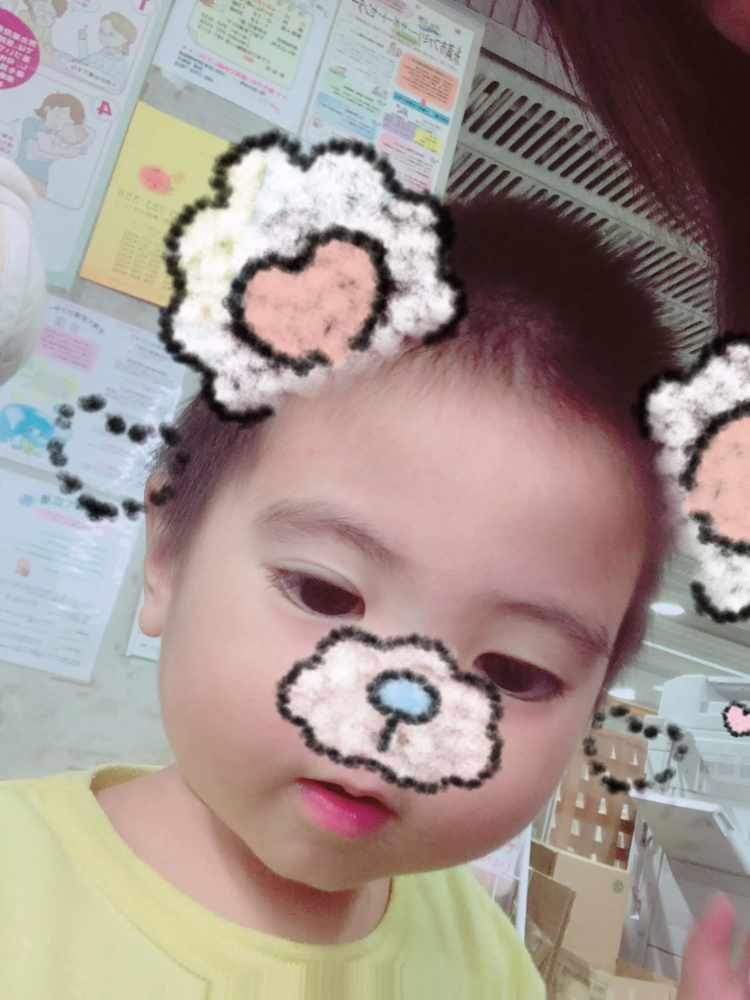

なぜ私は全てのメモをObsidianに集約したのか？
福祉の現場での知識管理から個人の学習効率化まで、Obsidianを使った実践的なナレッジ管理の方法を解説します。

オチつかない人
福祉の現場で働く4児の父
はじめに
福祉の現場で働いていると、利用者さんの情報や治療法、薬の知識などて日々の業務改善アイデアなど、管理すべき情報が山ほどあります。 以前は、これらの情報をExcel、Word、メモ帳、そして頭の中に散らばらせていました。 しかし、Obsidianに出会ってから、全ての情報を一箇所に集約し、効率的に管理できるようになりました。
Obsidianを選んだ理由
1. ローカルファイル管理
医療現場では、利用者さんの個人情報を扱うため、クラウドサービスへの依存は避けたいものです。 Obsidianは全てのデータをローカルで管理するため、セキュリティ面で安心です。
2. リンク機能による知識の繋がり
Obsidianの最大の特徴は、ノート同士をリンクで繋げられることです。 例えば、「うつ病」というノートから「SSRI」という薬のノートにリンクし、 さらに「認知行動療法」のノートにも繋げることで、知識のネットワークが構築されます。
3. マークダウン対応
シンプルなマークダウン記法で書けるため、フォーマットに時間を取られず、 内容に集中できます。また、他のツールとの互換性も高いです。
実際の活用例
利用者情報の管理
利用者さんごとにノートを作成し、以下のような構造で管理しています：
- 基本情報（年齢、性別、主訴）
- 既往歴（他のノートへのリンク）
- 現在の治療内容
- 観察記録（日付ごと）
- 今後の方針
治療法の知識ベース
治療法や薬についての知識を体系的に整理しています：
認知行動療法 → うつ病 → SSRI → 副作用 → 対処法 このように、関連する知識をリンクで繋げることで、 必要な情報に素早くアクセスできます。
Obsidianの設定とカスタマイズ
推奨プラグイン
- Calendar: 日付ベースのノート管理
- Graph View: 知識の繋がりを可視化
- Dataview: データベース的な機能
- Kanban: タスク管理
テーマ設定
長時間使用するため、目に優しいダークテーマを使用しています。 また、フォントサイズを少し大きくして、読みやすさを重視しています。
業務効率化への効果
Obsidianを導入してから、以下のような改善が見られました：
- 情報検索時間が50%短縮
- 知識の共有が容易になった
- 新しい発見や気づきが増えた
- 学習効率が向上した
今後の展望
現在は個人での使用ですが、将来的にはチームでの共有も検討しています。 Obsidianの同期機能や、Gitを使ったバージョン管理を活用して、 チーム全体の知識管理を効率化したいと考えています。
まとめ
Obsidianは、単なるメモアプリではありません。 知識を繋げ、新しい発見を生み出す「第二の脳」として機能します。 特に、複雑な情報を扱う医療現場では、その真価を発揮すると思います。